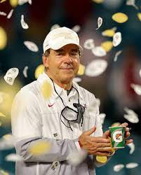

The Team

The University of Alabama is highly known for their outstanding football team year after year. Head coach, Nick Saban is recognized for his trainihng, especially on the defensive side. Although defense is Saban's favorite teaching, his offense does not go unrecongized. Saban has recruited some of the best of the best ihn college football every year.
Nick Saban
Nick Saban is known to be the greatest coach in college football. Saban start5ed his career as the assisstant coach of the LSU Tigers leading them to a national championship win in 2003. Then he moved on to the NFL as the head coach to the Miami Dolphins. Lastly, he decided to rebuild the football program at the University nof Alabama in 2007. With 166 wins, 7 national championships and only 23 loses in his career, Nick Saban is deemed to be the greatest coach ibn college football history.
National Championships

The University of Alabama has a total of 18 national championship wins. Dating all the way back to 1941 to the most recent 2021, Alabama stays as the leader of the most national championships in college football history.